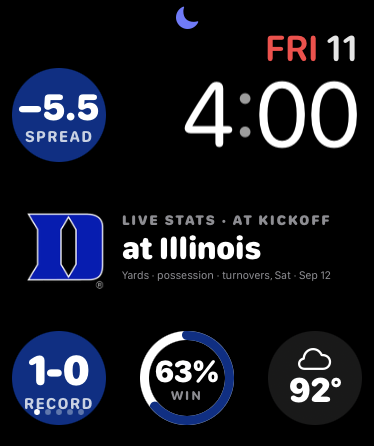
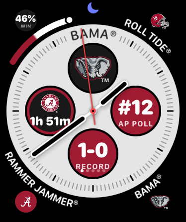
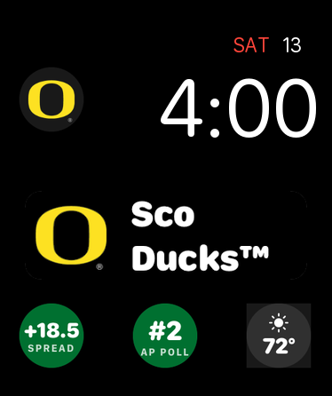
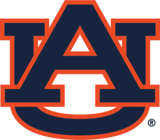
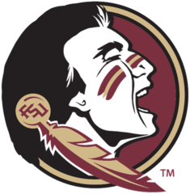
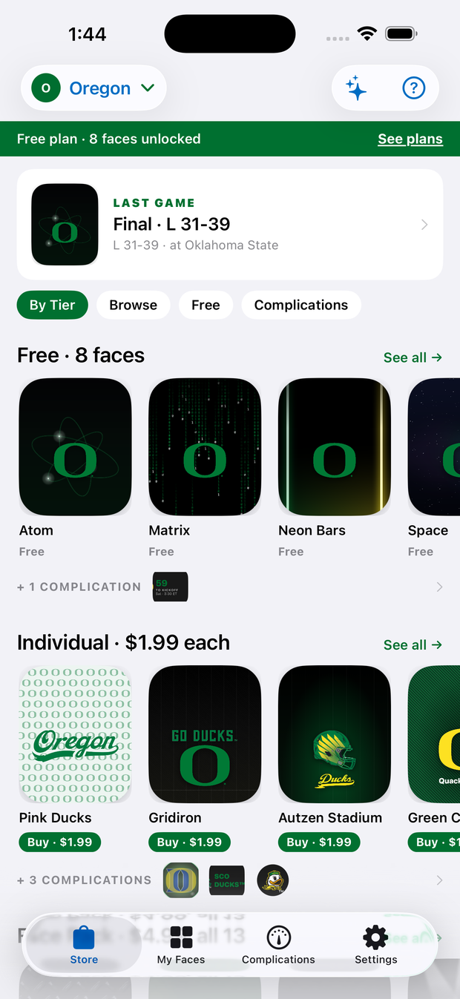
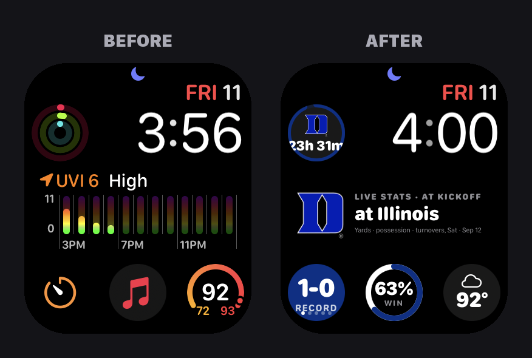
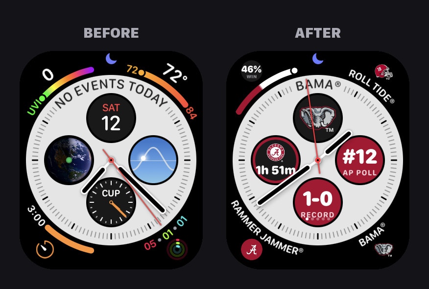
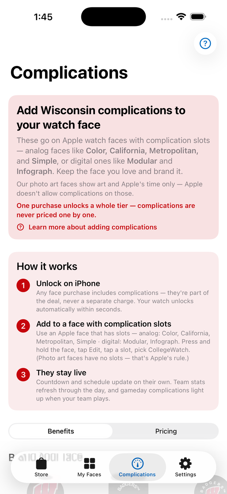
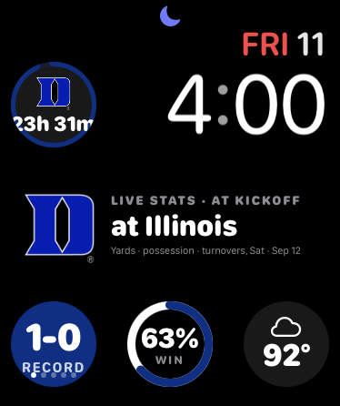

Officially licensed watch faces and 25 live complications — the score, the countdown to kickoff, your record, your rally cry — for the school you live and die with.
Download on theApp StoreFree to start · Requires iPhone and Apple Watch



Faces, marks, cheers, colors, schedule, stats — choose once and the whole watch turns. Switch any Saturday.







Plus Arizona, Kentucky, Miami, Michigan State, NC State, South Carolina, UCLA, USC and Wisconsin — more schools through the season.
Real marks, real school colors, and designs built around Apple's clock — not a wallpaper with a logo slapped on. Save a face from the app and set it on your watch in seconds.

CollegeWatch complications go into the slots on Apple's own faces — Modular, Infograph, Metropolitan, California and more. Same face, now yours.



One purchase unlocks a whole family for your school — complications are never sold one by one.
With a School Pass your face carries the game: score, quarter and clock, yards, who has the ball, turnovers — and a win probability that moves with every drive. Before kickoff it counts down. After the final, it shows the next one.

Get CollegeWatch from the App Store, then add it to your watch from Apple's Watch app. The app walks you through it.
The app sends your school to the watch. Faces, marks and stats all follow. Change it whenever you like.
Save a CollegeWatch face, or add complications to the Apple face you already wear — slot by slot, with a picture of each one.
Yes — CollegeWatch is built for the wrist. The iPhone app is where you pick a school, browse faces and buy; the watch is where it all shows up. It needs watchOS 26 and iOS 26.
Every school has free faces and free complications (Kickoff Countdown, your mark). Premium faces are $1.99, a school's whole pack is $4.99, and a yearly School Pass ($19.99) unlocks every complication including the live gameday feed. No account, no sign-in — purchases follow your Apple Account.
Yes. Every mark, name and rally cry is used under license from the school. 2ThumbZ has shipped licensed collegiate watch faces since the first smartwatches.
During a game the face refreshes itself about every 5 to 8 minutes — a limit Apple puts on every watch face. Raise your wrist and open the CollegeWatch app on the watch for a real-time update.
You can hold a School Pass for as many schools as you like; the watch shows one school at a time, and switching takes a tap on the phone.
Put your school on your wrist before it is.
Download on theApp StoreSchool Pass subscriptions renew yearly unless cancelled at least 24 hours before the end of the period; manage in your Apple Account settings. Terms · Privacy · Help & Support